36 Phố Phường Hà Nội: Di sản văn hoá ngàn năm Thăng Long
36 Phố Phường Hà Nội – biểu tượng văn hóa và lịch sử đặc sắc của mảnh đất Thủ đô. Mỗi con phố đều mang trong mình những câu chuyện, dấu ấn riêng về một thời Thăng Long cổ kính. Đến nay, từng ngõ ngách ở đây vẫn giữ được nét duyên dáng, là nơi kết nối giữa quá khứ và hiện tại, giữa truyền thống và hiện đại, thu hút biết bao thế hệ tìm đến để khám phá.
Tổng quan về 36 Phố Phường Hà Nội
36 Phố Phường Hà Nội – địa danh lưu giữ dấu ấn văn hóa, lịch sử hơn một thiên niên kỷ, là một khu đô thị cổ kính tọa lạc ngay giữa lòng thủ đô.
Với diện tích khoảng 100ha và 76 tuyến phố hình thành từ thế kỷ 11, nơi đây không chỉ đơn thuần là một điểm buôn bán sầm uất mà còn là “cái nôi” của những nghề thủ công truyền thống đặc trưng, thấm đẫm tinh hoa của bao thế hệ người dân Hà Thành.
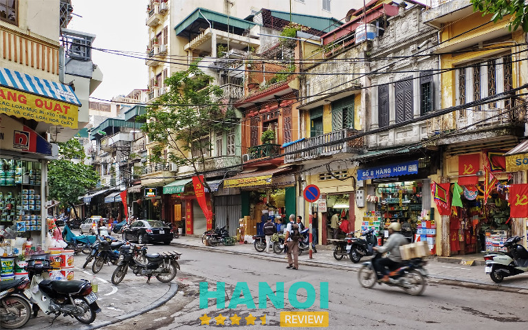
Dù mang tên phố cổ, nhưng 36 phố phường lại không bao giờ tĩnh lặng, trầm mặc như cái tên gợi lên. Thay vào đó, nơi đây luôn tấp nập, sôi động bởi cảnh mua bán, giao thương nhộn nhịp của người dân.
Những con phố: Hàng Mã, Hàng Tre, Hàng Thiếc vẫn còn giữ nguyên nghề truyền thống, đưa du khách trở về thời kỳ vàng son của một Thăng Long xưa.
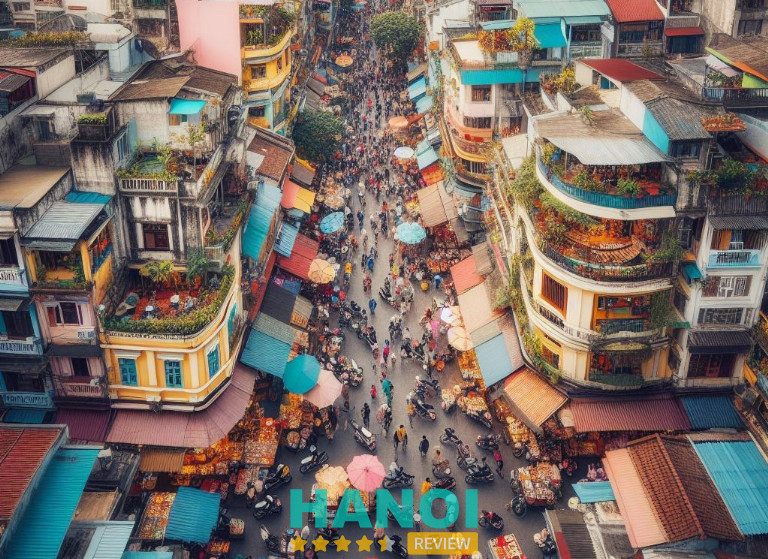
Điều làm say đắm lòng người, không chỉ là sự huyên náo ấy, mà còn là vì kiến trúc độc đáo của các con phố, ngõ nhỏ và cả những ngôi nhà cổ dạng ống, mái ngói đỏ nghiêng nghiêng đặc trưng từ thế kỷ 18, 19.
Dù diện tích không quá lớn, nhưng mỗi căn nhà đều được bố trí khéo léo, để phục vụ cho mọi nhu cầu sử dụng, từ khu vực sản xuất, buôn bán cho đến không gian thờ cúng, nơi tiếp khách và ăn uống, nghỉ ngơi.
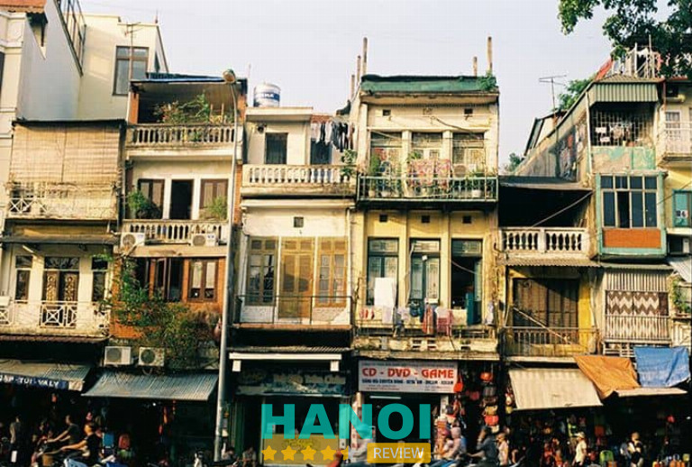
Lịch sử hình thành 36 Phố Phường Hà Nội
Lịch sử Hà Nội 36 phố phường bắt nguồn từ thời đại Lý – Trần, khi khu dân cư này dần hình thành và phát triển thành trung tâm giao thương sầm uất bậc nhất của thành Thăng Long.
Các nghề thủ công và buôn bán phát triển mạnh mẽ, tạo nên các khu phố nghề, như: Hàng Bạc, Hàng Thiếc, Hàng Bông, Hàng Mã,… Nơi đây không chỉ hội tụ của các nghệ nhân xuất chúng từ các làng nghề quanh kinh thành, mà còn trở thành biểu tượng cho sự phồn thịnh của Hà Nội xưa.
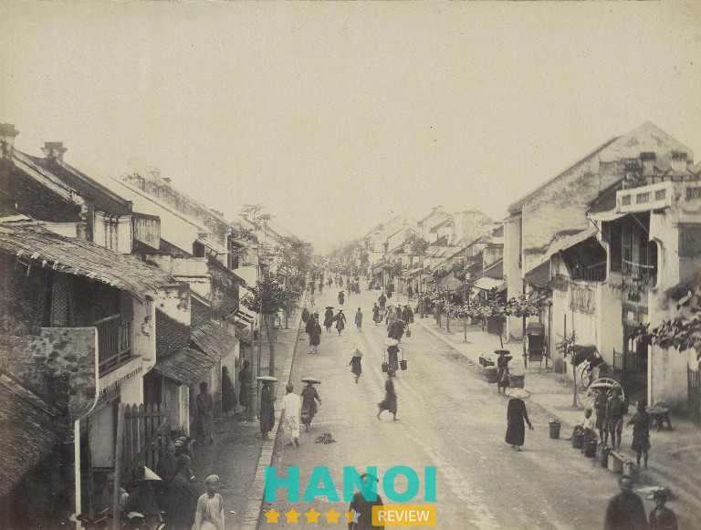
Dưới thời Lê, nơi đây còn mở rộng với các khu phố người Hoa và đến thời Pháp thuộc, dấu ấn kiến trúc người Pháp cũng góp phần làm nên vẻ đẹp độc đáo cho khu vực này.
Mặc dù đã trải qua nhiều biến động lịch sử, nhưng 36 Phố Phường Hà Nội vẫn tồn tại đến ngày nay và lưu giữ những giá trị văn hóa và kiến trúc đặc trưng, trở thành điểm đến thu hút bao du khách say mê Hà Nội.
Dù có ý kiến cho rằng “36” không phải là con số hoàn toàn chính xác, vì chưa từng được đề cập trong lịch sử và đến cuối thế kỷ 19 đã tăng lên hơn 50 con phố có tên bắt đầu với chữ “Hàng”.
Thế nhưng, cái tên “36 Phố Phường Hà Nội” đã gắn liền với ký ức của nhiều người, đặc biệt là sau khi được nhà văn Thạch Lam tôn vinh qua tác phẩm “Hà Nội 36 Phố Phường” lừng lẫy một thời.
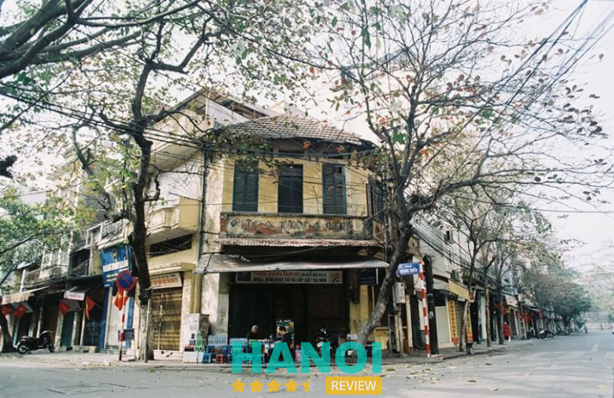
36 Phố Phường Hà Nội gồm có những phố nào?
36 Phố Phường Hà Nội được xác định như sau: phía Đông là đường Trần Nhật Duật và đường Trần Quang Khải, phía Tây là phố Phùng Hưng, phía Bắc là Hàng Đậu và phía Nam là các phố Hàng Gai, Hàng Bông, Cầu Gỗ, Hàng Thùng.
Với 76 tuyến phố thuộc 10 phường khác nhau, khu vực này từ lâu đã thường xuyên xuất hiện trong các bài thơ, câu ca. Nổi tiếng nhất trong số đó, chắc phải nói đến bài vè về tên của 36 phố phường sau đây:
“Rủ nhau chơi khắp Long Thành,
Ba mươi sáu phố rành rành chẳng sai;
Hàng Bồ, Hàng Bạc, Hàng Gai,
Hàng Buồm, Hàng Thiếc, Hàng Hài, Hàng Khay,
Mã Vĩ, Hàng Điếu, Hàng Giầy,
Hàng Lờ, Hàng Cót, Hàng Mây, Hàng Đàn,
Phố Mới, Phúc Kiến, Hàng Ngang,
Hàng Mã, Hàng Mắm, Hàng Than, Hàng Đồng,
Hàng Muối, Hàng Nón, cầu Đông,
Hàng Hòm, Hàng Đậu, Hàng Bông, Hàng Bè,
Hàng Thùng, Hàng Bát, Hàng Tre,
Hàng Vôi, Hàng Giấy, Hàng The, Hàng Gà.
Quanh đi đến phố Hàng Da,
Trải xem Hàng phố, thật là cũng xinh.
Phố hoa thứ nhất Long Thành,
Phố dăng mắc cửi, đàn quanh bàn cờ.
Người về nhớ cảnh ngẩn ngơ,
Bút hoa xin chép nên thơ lưu truyền”
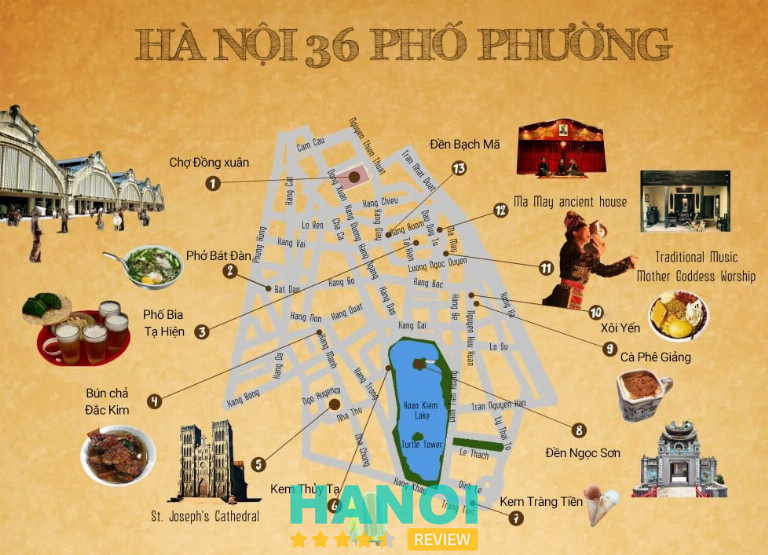
Mặc cho trải qua biết bao thăng trầm, 36 Phố Phường Hà Nội vẫn vẹn nguyên ở đó và trường tồn đến tận ngày nay. Với vẻ đẹp truyền thống, cổ xưa cùng những ý nghĩa to lớn về mặt văn hóa, nơi đây đã trở thành điểm check-in hấp dẫn, thu hút đông đảo khách du lịch thập phương đổ về để lưu giữ các khoảnh khắc xinh đẹp và tìm hiểu lịch sử.
Khám phá các điểm độc đáo của 36 Phố Phường Hà Nội
Bên cạnh giá trị lịch sử ý nghĩa, 36 Phố Phường Hà Nội còn có vô vàn điều độc đáo, lôi cuốn mà du khách có thể khám phá và trải nghiệm, bao gồm:
Tìm hiểu tên gọi đặc biệt của 36 Phố Phường Hà Nội
Tên gọi của các con phố trong 36 Phố Phường Hà Nội đã trở thành tiềm thức của nhiều người dân Hà Thành và làm gợi lên hình ảnh mộc mạc, dung dị, gần gũi. Những cái tên, như: Hàng Nón, Hàng Đường, Hàng Mắm, Hàng Muối,… đại diện cho mặt hàng mà tiểu thương đang buôn bán và trao đổi.
Trên các con phố này, mỗi một ngõ ngách đều ẩn chứa những câu chuyện rất đặc biệt và độc đáo, góp phần nên một bức tranh đa sắc, mang đậm giá trị văn hóa, ở ngay giữa lòng Thủ đô nghìn năm văn hiến.
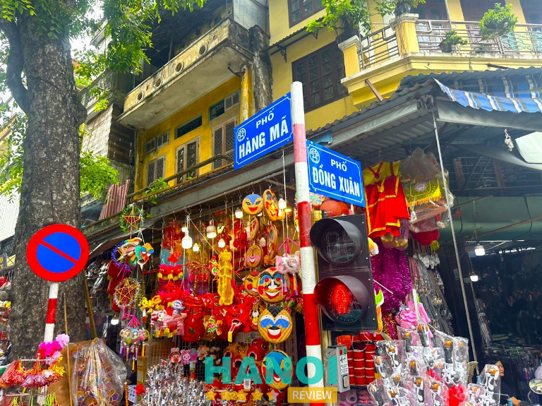
Tuy đông đúc, náo nhiệt, nhưng những con phố này vẫn lưu giữ được những giá trị văn hóa cổ xưa từ lịch sử hàng nghìn năm trước. Mỗi con phố là một ngôi làng nghề thu nhỏ, tập trung các người thợ tài giỏi nhất, giúp tạo nên sự đa dạng của nền văn hóa làng nghề truyền thống tại Hà Nội.
Chiêm ngưỡng phong cách kiến trúc độc đáo
Có thể nói, điểm thu hút du khách tứ phương đến với 36 Phố Phường Hà Nội, đó là lối kiến trúc độc đáo và đặc biệt của những con phố ở đây. Với kiểu nhà ống đặc trưng, mái ngói nghiêng, cùng mặt tiền là hàng loạt cửa hàng kinh doanh buôn bán, giúp tạo nên một khung cảnh ấn tượng, đậm chất phong cách Việt Nam xưa.
Những tưởng, các căn nhà có vẻ nhỏ, chật chội, nhưng ở bên trong lại được thiết kế cực kỳ khéo léo và hợp lý, để có thể đáp ứng đầy đủ cho tất cả nhu cầu sinh hoạt thường ngày. Dấu ấn thời gian còn được thể hiện thông qua những con phố, ngõ nhỏ phủ đầy rêu phong.
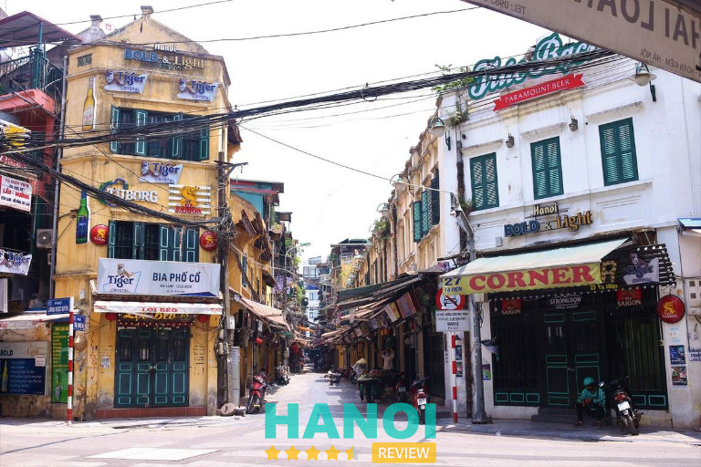
Bên cạnh đó, các đền, chùa, đình, hội quán,… trong khu vực 36 Phố Phường Hà Nội cũng tạo nên một không gian tâm linh mang tính cộng đồng. Những công trình linh thiêng này vẫn đang duy trì hoạt động đến ngày nay và thu hút đông đảo du khách tìm đến để vãn cảnh, cầu khấn.
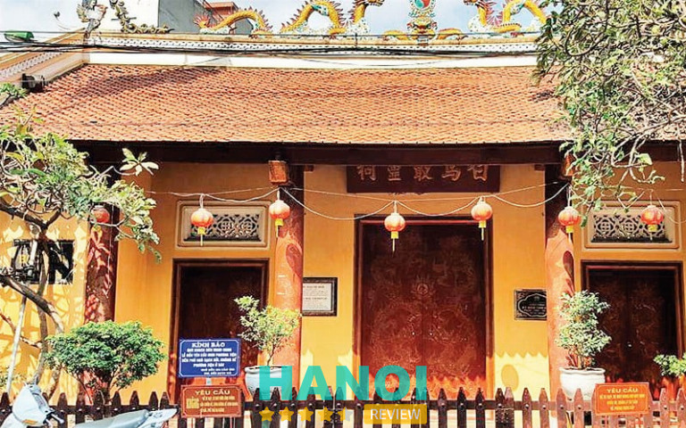
Khám phá văn hóa truyền thống lâu đời
36 Phố Phường Hà Nội được ví như là vùng đất “ngàn năm văn vật”, bởi nơi đây hiện vẫn đang chứa đựng rất nhiều những giá trị phi vật thể, đời sống của người dân địa phương, văn hóa ẩm thực dân gian, các lễ hội truyền thống và hàng trăm công trình đình, đền, chùa, hội quán.
Với những du khách lần đầu tiên đến với 36 Phố Phường Hà Nội, khi đi dạo trong con phố nhỏ nhộn nhịp thì có thể bị choáng ngợp và có phần hoảng sợ, vì tình trạng giao thông tấp nập ở đó.
Tuy nhiên, chỉ khi rảo bước, bạn mới có thể cảm nhận rõ nét vẻ đẹp riêng biệt của lối kiến trúc độc đáo cũng như cuộc sống thường nhật của người dân Hà Thành.
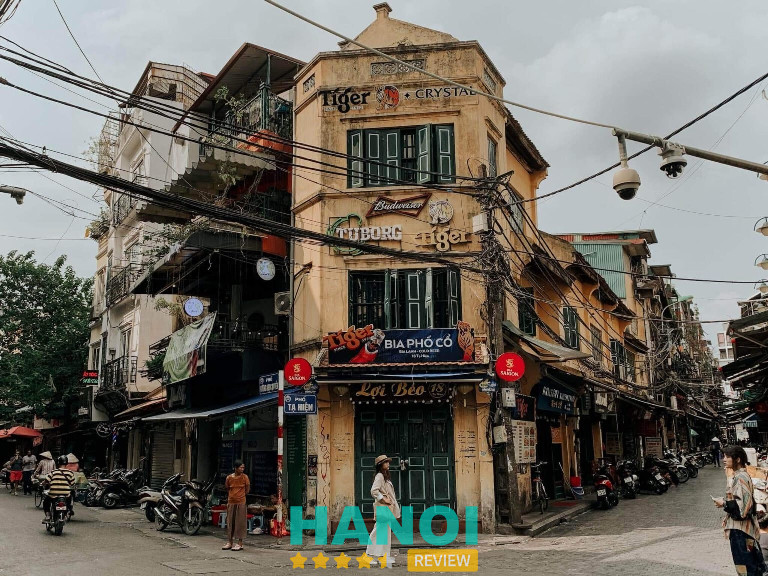
Cứ vào mỗi dịp Tết Nguyên Đán, người dân và du khách đều tề tựu về con phố Hàng Mã, để trải nghiệm không khí náo nhiệt, tràn ngập màu sắc và âm thanh sôi động. Đảm bảo đó sẽ là khoảnh khắc lý tưởng cho bạn nhìn ngắm và hiểu thêm về truyền thống văn hóa ở khu phố cổ này.
Trải nghiệm văn hóa ẩm thực Hà Nội phong phú và đặc sắc
Không chỉ “quyến rũ” khách du lịch bởi những câu chuyện lịch sử và văn hóa đầy lý thú, 36 Phố Phường Hà Nội còn nổi tiếng với hàng loạt món ăn trứ danh của mảnh đất Kinh Kỳ. Thậm chí, chỉ cần nói tên món là đã có thể nhớ ngay tên con phố có bán món ăn đó. Tiêu biểu như:
- Phở Gánh Hàng Chiếu
Đây là gánh phở xưa lâu đời ở phố cổ và khung giờ mở cửa cũng rất đặc biệt: 3 giờ sáng. Chỉ là một gánh phở nhỏ, với vài chiếc bàn ghế nhựa, nhưng luôn trong tình trạng đông nghẹt khách.
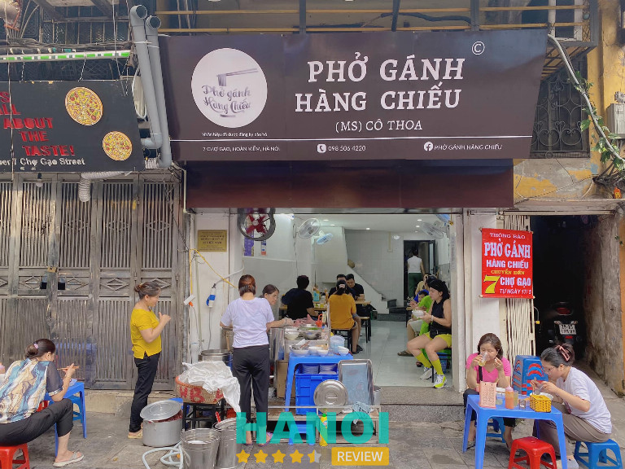
Bát phở nóng hổi, nước ninh xương ngọt thanh, thịt bò mềm mềm, bánh phở dai dai, tạo nên hương vị đặc trưng chuẩn vị Bắc. Đảm bảo ăn một lần là nhớ mãi.
- Bún chả Đắc Kim ở Hàng Mành
Vào những năm 1966, quán bún chả Đắc Kim ra đời trên con phố Hàng Mành. Đây là quán bún chả truyền thống, chuẩn gốc Kinh Kỳ Thăng Long xưa nên có hương vị rất thơm ngon, đậm đà và hấp dẫn cả du khách quốc nội lẫn quốc tế.
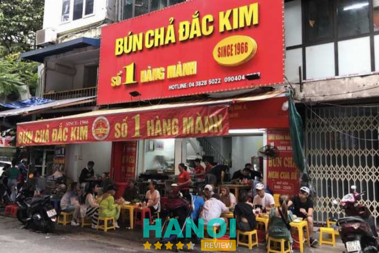
Dần dần, để dễ nhớ hơn thì người ta thường gọi là Bún chả Hàng Mành thay cho bún chả Đắc Kim, vì nó gắn liền với địa chỉ của quán. Đây cũng là quán bún chả Hàng Mành đầu tiên xuất hiện tại Hà Nội.
- Bánh cuốn Hàng Gà
Bánh cuốn ở đây được tráng mỏng, đều tay, nhưng không bị rách nát, dùng chung với các loại chả, hành phi thơm nức mũi và nước chấm chua cay mặn ngọt hòa quyện.
- Bún đậu Hàng Khay
Một mẹt bún đậu đầy đủ với đa dạng loại topping ngon miệng, khi ăn chấm đẵm vào bát mắm tôm đậm đà, kết hợp với bún tươi, tạo nên một hương vị bùng nổ trong khoang miệng.
Quán Bún Đậu Hàng Khay luôn đông khách, nhưng lại nằm trong một con ngõ nhỏ nên phải chịu khó xếp hàng thì mới có thể thưởng thức được. Ấy vậy mà, người ta lại sẵn sàng chờ đợi thì cũng đủ chứng tỏ độ ngon và sức hút của món ăn này rồi.
- Caramen Hàng Than
Món ăn vặt ngọt ngào này đã khiến cho nhiều thực khách phải xuýt xoa, cảm thán ngay từ lần thử đầu tiên, vì hương vị vô cùng ngon, ngậy béo và thơm thơm, khó mà tìm thấy ở bất kỳ hàng quán nào khác.
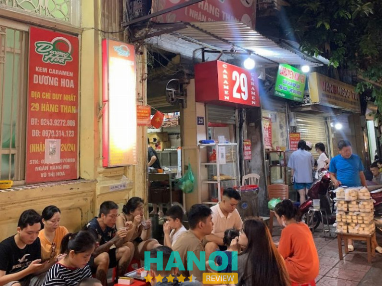
Mặc dù chỉ là những đòn gánh nhỏ hay các hàng quán ngồi ở vỉa hè, với vài ba bộ bàn ghế nhựa, nhưng chính hương vị đặc sắc và ngon lành ở đây, đã làm cho biết bao tín đồ ẩm thực phải thổn thức và nhớ nhung.
Mua sắm tại các cửa hàng trên phố
Trước đây, 36 Phố Phường Hà Nội là nơi tập trung các ngành nghề thủ công truyền thống và mỗi phố phường sẽ chuyên về một loại hàng hóa đặc trưng. Nổi bật như: làm nón lá, làm đèn lồng, chạm khắc gỗ, đóng giày, đúc đồng, làm gốm sứ, thêu thùa, làm trang sức và nhiều nghề khác.
Từ thế hệ cha ông đến thế hệ con cháu, cứ như vậy, những người thợ lành nghề sẽ truyền lại kỹ thuật và bí quyết sản xuất của từng ngành nghề, để gìn giữ, lưu truyền và phát triển về mai sau.
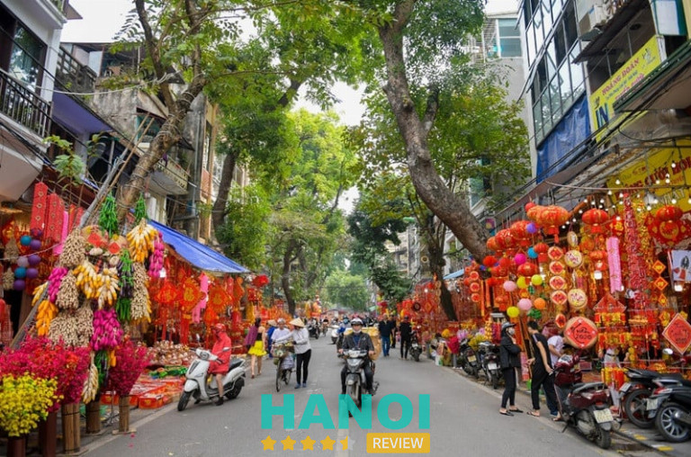
Ngày nay, khi quá trình đô thị hóa diễn ra mạnh mẽ, 36 Phố Phường Hà Nội đã có sự đổi khác ít nhiều và đa dạng hơn về các mặt hàng kinh doanh. Tuy vậy, vẫn có một vài con phố còn giữ nguyên nét truyền thống và vẫn trung thành với các sản phẩm đặc trưng của mình. Chẳng hạn như:
- Phố Hàng Mã: bán các sản phẩm trang trí, đồ thờ cúng, vàng mã và lồng đèn
- Phố Hàng Bạc: ga công và kinh doanh trang sức vàng – bạc
- Phố Hàng Chiếu: bán những chiếc chiếu sặc sỡ sắc màu, bền tốt
- Phố Hàng Thiếc: gia công kim loại, đúc thiếc, sắt tây thành đồ gia dụng và buôn bán
- Phố Hàng Bông: bán mềm, chăn đệm, bật bông
- Phố Hàng Đào: bán đa dạng chủng loại vải vóc
- Phố Hàng Buồm: bán bánh kẹo và mứt tết
- Phố Hàng Quạt: bán các sản phẩm thờ cúng
- Phố Mã Mây: cung cấp dịch vụ du lịch lữ hành
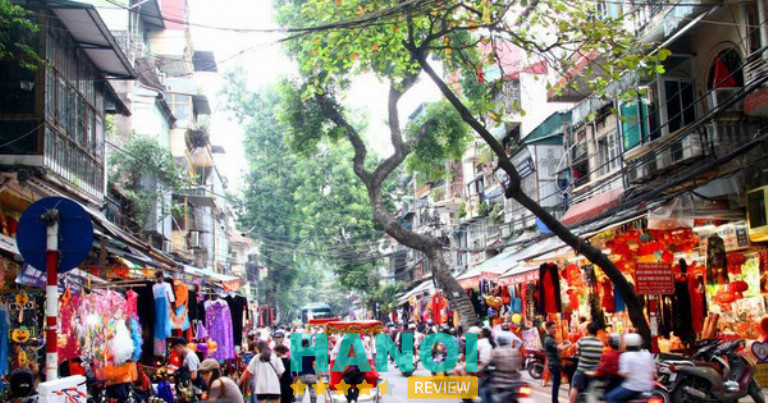
Cẩm nang hữu ích khi du lịch 36 Phố Phường Hà Nội
Nếu đang dự định ghé thăm 36 Phố Phường Hà Nội thì bạn đọc có thể tham khảo có thể tham khảo cẩm nang du lịch đầy hữu ích và thú vị do HaNoiReview tổng hợp bên dưới.
Hướng dẫn di chuyển
Việc đi đến khu vực phố cổ – 36 Phố Phường Hà Nội khá đơn giản và thuận tiện, cho nên du khách có thể lựa chọn nhiều loại phương tiện di chuyển khác nhau. Ví dụ như:
- Xe máy: Nếu muốn chủ động về thời gian di chuyển thì bạn có thể chọn đi bằng xe máy. Đến nơi, bạn gửi xe và đi bộ lên các con phố để tham gia vào những hoạt động chụp hình, khám phá ẩm thực, mua sắm,…
- Xe bus: Xe bus là sự lựa chọn hoàn hảo dành cho những du khách muốn trải nghiệm sự mới mẻ và tối ưu chi phí. Bạn có thể bắt xe bus số 03, 09, 11, 14, 31, 36,…
- Xe taxi, xe ôm công nghệ: Bạn đặt xe taxi hoặc xe ôm công nghệ để đi đến khu vực phố cổ, nếu không muốn tự lái xe.
Các điểm tham quan hấp dẫn xoay quanh 36 Phố Phường Hà Nội
Hồ Hoàn Kiếm
Hồ Hoàn Kiếm, (tên gọi khác: Hồ Gươm) là một biểu tượng nức tiếng của Hà Nội. Đến đây, du khách sẽ tận mắt ngắm nhìn tháp Rùa đã trường tồn ở đó qua hàng trăm năm và cảm nhận được những giá trị văn hóa xưa kia.
Bên cạnh Hồ Gươm, du khách cũng có thể ghé tới tham quan một vài di tích thắng cảnh xinh đẹp, ở gần đó, như là: đền Ngọc Sơn, cầu Thê Húc, đình Trấn Ba, Đài Nghiên,…
Lăng Chủ tịch Hồ Chí Minh
Khu Di tích Lăng Chủ tịch Hồ Chí Minh, chắc chắn là điểm đến mà mỗi người dân Việt Nam đều muốn ghé thăm một lần trong đời. Khi đến đây, bạn có thể vừa tham quan bên trong lăng và tỏ bày tấm lòng biết ơn cũng như sự thương yêu với vị lãnh tụ vĩ đại của đất nước.
Ngoài ra, một trải nghiệm mà nhất định bạn phải thử một lần, khi đến thăm Lăng Bác, đó là tham gia Lễ Thượng cờ tại Quảng trường Ba Đình. Đây là một nghi thức cấp quốc gia được thực hiện hàng ngày tại Lăng Bắc vào lúc 6h sáng (mùa hè) và 6h30 sáng (mùa đông).
Từ sáng sớm, rất nhiều người đã tập trung xếp hàng ở Quảng trường để đón xem các chiến sĩ thực hiện nghi lễ Thượng cờ một cách đầy trang trọng và nghiêm nghị. Hứa hẹn đây sẽ là một trải nghiệm vô cùng đáng nhớ, với những ai có dịp chứng kiến cảnh tượng thiêng liêng này.
Hoàng thành Thăng Long
Hoàng thành Thăng Long là quần thể di tích lịch sử được xây dựng từ thời kỳ tiền Thăng Long, vào thế kỷ 7 và chứa đựng rất nhiều công trình độc đáo, hiện vật cổ xưa, mang giá trị lịch sử vô cùng to lớn.
Tới đây, du khách sẽ có cơ hội khám phá những công trình, như: cột cờ Hà Nội, điện Kính Thiên, Cửa Bắc, Đoan Môn,… cũng như là thỏa sức check-in sống ảo, với áo dài thướt tha hoặc bộ cổ phục duyên dáng, thanh lịch.
Ngoài ra, vào buổi tối ghé thăm nơi đây, bạn còn có thể được chiêm ngưỡng không gian cung đình kỳ ảo dưới ánh đèn lồng và tìm hiểu về triều đại xưa qua những kiến trúc, cổ vật quý và thưởng thức điệu múa cung đình.
Đền Bạch Mã
Đền Bạch Mã là di tích lịch sử được xây dựng từ thế kỷ thứ 9 và nổi bật với lối kiến trúc độc đáo, đầy tinh tế, mang đậm tính truyền thống dân gian. Đây còn là nơi thờ Tề Vương Phi và Bể Núi.
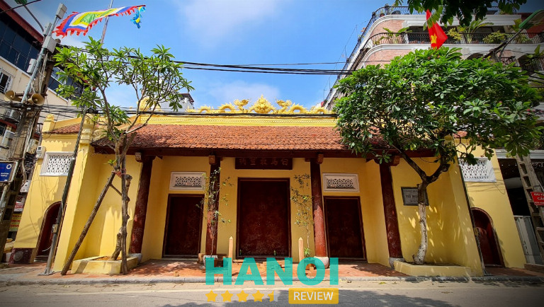
Ngoài ra, nơi đây cũng trưng bày rất nhiều hiện vật cổ còn sót lại của kinh thành Thăng Long xưa kia, tiêu biểu như là: bia đá, hạc thờ, sắc phong, kiệu thờ, bức hoành phi “Đông trấn linh từ”, Cỗ Long ngai,…
Nhà hát lớn Hà Nội
Nhà hát lớn Hà Nội được khởi công xây dựng dưới thời kỳ Pháp thuộc và thiết kế theo phong cách kiến trúc cổ điển đặc trưng của Châu Âu. Công trình này được lấy cảm hứng từ nhà hát Opera và cung điện Tuileries – hai công trình rất nổi tiếng của Paris.
Địa danh này luôn khiến cho du khách phải cảm thán và trầm trồ trước vẻ đẹp nguy nga, cổ kính tựa như một tòa lâu đài ở trời Âu. Nơi đây còn là địa điểm tổ chức những chương trình nghệ thuật quy mô lớn, kịch nói, buổi hòa nhạc,… mang lại cho khán giả tham gia những trải nghiệm vô cùng tuyệt vời, mãn nhãn mãn nhĩ.
Chợ Đồng Xuân
Chợ Đồng Xuân là khu chợ lâu đời, quy mô to lớn và nổi tiếng nhất ở Thủ đô Hà Nội. Nơi đây có tổng diện tích lên đến 6.500m2 và do người Pháp xây dựng vào năm 1889.
Chợ có 3 tầng và bày bán đầy đủ các loại mặt hàng, từ giày dép, quần áo, vải vóc cho đến các sản phẩm thủ công mỹ nghệ truyền thống cũng như là những món ăn ngon trứ danh của ẩm thực Hà Nội.
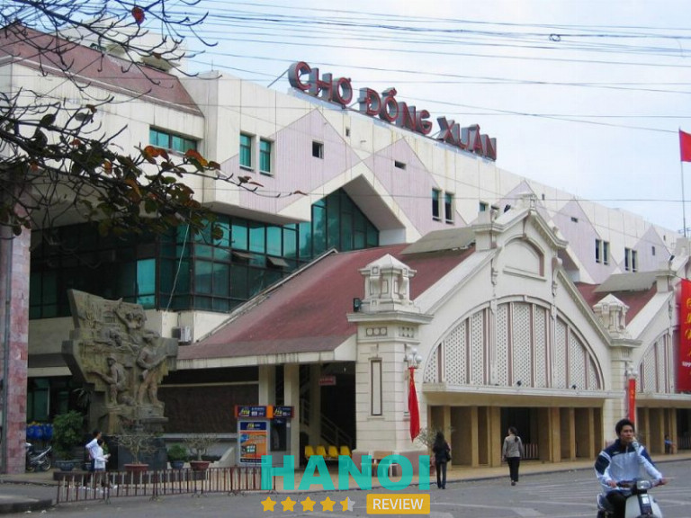
Vì vậy mà ở đây luôn luôn tấp nập, người mua kẻ bán ra vào, tạo nên một khung cảnh cực kỳ nhộn nhịp, náo nhiệt. Do đó, khi tới chợ Đồng Xuân, du khách sẽ được hòa mình vào không khí giao thương sôi nổi và thoải mái chọn mua các mặt hàng truyền thống hoặc thưởng thức những món ăn thơm lừng, tươi ngon.
36 Phố Phường Hà Nội không chỉ là nơi ghi dấu lịch sử hình thành và phát triển của vùng đất Thăng Long xưa, mà còn là biểu tượng sống động của bản sắc văn hóa Việt.
Những con phố nhỏ, ngôi nhà cổ và các di tích lịch sử tồn tại theo năm tháng, hoà quyện cùng với nhịp sống sôi động, đổi mới từng ngày đã và đang chứng minh cho sự trường tồn bền bỉ của một di sản văn hóa quý giá.
Nếu có dịp đến với Thủ đô Hà Nội – mảnh đất nghìn năm văn hiến thì hoạt động khám phá 36 phố phường cổ kính, chắc chắn là một trải nghiệm mà bạn đọc không thể bỏ lỡ, để chuyến đi thêm phần ý nghĩa và trọn vẹn hơn.
Có thể bạn quan tâm
- Nhà thờ Lớn Hà Nội: lịch sử, kiến trúc, 1 biểu tượng vững chắc
- Nhà tù Hỏa Lò – Ký ức đau thương và những sự kiện lịch sử quan trọng
- Cột Cờ Hà Nội: Chứng nhân lịch sử và biểu tượng hào hùng của Thủ Đô
- Khám phá Hoàng Thành Thăng Long: Di sản văn hoá và lịch sử của Việt Nam
Tin đọc nhiều


Tin liên quan

Nhà thờ Lớn Hà Nội: lịch sử, kiến trúc, 1 biểu tượng vững chắc
Nhà thờ Lớn Hà Nội (tên chính thức: Nhà thờ chính tòa Thánh Giuse) là nhà thờ chính tòa của Tổng giáo phận Hà Nội,...

Nhà tù Hỏa Lò – Ký ức đau thương và những sự kiện lịch sử...
Di tích lịch sử Nhà tù Hỏa Lò từ lâu đã được nhiều người dân Việt Nam biết đến với dấu ấn đau thương, phản...

Phố Cổ Hà Nội: Nơi lưu giữ hồn xưa trong từng con ngõ nhỏ
Phố Cổ Hà Nội, nằm ngay giữa lòng thủ đô, là nơi mà bất kỳ ai cũng có thể cảm nhận được sự hòa quyện...

BST Những hình ảnh đẹp về Phố Cổ Hà Nội gợi nhớ ký ức
Phố cổ Hà Nội không chỉ là một không gian đậm chất văn hóa và lịch sử mà còn là nơi hội tụ những nét...

Trở thành người đầu tiên bình luận cho bài viết này!